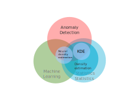
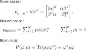
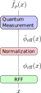

Fast Kernel Density Estimation with Density Matrices and Random Fourier Features
Joseph A. Gallego-Mejia / Juan F. Osorio R. / Fabio González
jagallegom@unal.edu.co / josorior@unal.edu.co / fagonzalezo@unal.edu.coComputing Systems and Industrial Engineering Department – Bogota, Colombia
Background

Density Estimation
- Probability density function (pdf): defines the likelihood of failing within particular ranges of values from a random variable.
Density Estimation
- Probability density function (pdf): defines the likelihood of failing within particular ranges of values from a random variable.
- Given a data set, if we suppose that these data are samples of an unknown stochastic process, we try to reconstruct the pdf that best approximates its distribution.
Density Estimation

- Probability density function (pdf): defines the likelihood of failing within particular ranges of values from a random variable.
- Given a data set, if we suppose that these data are samples of an unknown stochastic process, we try to reconstruct the pdf that best approximates its distribution.
- Two approaches: parametric and non-parametric.
Aplications

Generative Models

Density Estimation
Anomaly Detection

Classification
Kernel Density Estimation
- Non-parametric density estimation method.
Kernel Density Estimation
- Non-parametric density estimation method.
- Does not make any particular assumption about the underlying probability density function.
Kernel Density Estimation
- Non-parametric density estimation method.
- Does not make any particular assumption about the underlying probability density function.
- Unbiased estimator of the pdf.

Kernel Density Estimation Problems
- Inneficient. Memory based algorithm.
Kernel Density Estimation Problems
- Inneficient. Memory based algorithm.
- High dimensional data.
Kernel Density Estimation Problems
- Inneficient. Memory based algorithm.
- High dimensional data.
- It is not differentiable.
Kernel Density Estimation Problems
- Inneficient. Memory based algorithm.
- High dimensional data.
- It is not differentiable.
| Phase | Memory | Time |
|---|---|---|
| Training Phase | \(O(N)\) | \(O(1)\) |
| Testing Phase | \(O(N)\) + \(O(M)\) | \(O(NM)\) |
N: number of training points
M: number of testing points
Problem Statement
Challenges of density estimation methods
- Efficiency and scalability.
- Simplicity.
- Ability to produce a good estimation of the density.
- Integrability with deep models
- Good for anomaly detection?
Problem Statement
| Aspects | Kernel Density Estimation | Neural Density Estimation | Generative Adversarial Networks | Ideal Method |
|---|---|---|---|---|
| Non Memory Based | ✖ | ✓ | ✓ | ✓ |
| Simplicity and interpretability | ✓ | ✖ | ✖ | ✓ |
| Training Difficulty | ✓ | ✖ | ✖ | ✓ |
| Density Estimation | ✓ | ✓ | ✖ | ✓ |
| Differentiable | ✖ | ✓ | ✓ | ✓ |
| Good for anomaly detection | ✓? | ✓? | ✓? | ✓? |
Random Fourier Features and Kernel Methods
Kernel Methods
- Feature space induced by a kernel function.
Kernel Methods
- Feature space induced by a kernel function.
- High or infinite dimensional embedded feature space.
Kernel Methods
- Feature space induced by a kernel function.
- High or infinite dimensional embedded feature space.
- Problem: efficiency \(O(N^2)\)
\[\textbf{K}= \begin{bmatrix}k(\textbf{x}_1, \textbf{x}_1) & \cdots & k(\textbf{x}_1,
\textbf{x}_N)
\\ & \vdots
\\ \cdots& k(\textbf{x}_i, \textbf{x}_j) & \cdots
\\ & \vdots &
\\ k(\textbf{x}_N, \textbf{x}_1) & \cdots & k(\textbf{x}_N, \textbf{x}_N)
\end{bmatrix}\]
Random Fourier Features
- Idea: feature space approximation.
Random Fourier Features
- Idea: feature space approximation.
- Given \( k:\mathbb{R}^d \times \mathbb R^d \rightarrow \mathbb R\)
builds an embedding \( \phi_{\text{rff}}: \mathbb R^d \rightarrow \mathbb{R}^D\)
such that \[ k(x,y) \approx \langle \phi_{\text{rff}}(x), \phi_{\text{rff}}(y) \rangle \]
Random Fourier Features
- Idea: feature space approximation.
- Given \( k:\mathbb{R}^d \times \mathbb R^d \rightarrow \mathbb R\)
builds an embedding \( \phi_{\text{rff}}: \mathbb R^d \rightarrow \mathbb{R}^D\)
such that \[ k(x,y) \approx \langle \phi_{\text{rff}}(x), \phi_{\text{rff}}(y) \rangle \] - Result: learn models involving non-linear kernels using linear methods
Random Fourier Features

- Idea: feature space approximation.
- Given \( k:\mathbb{R}^d \times \mathbb R^d \rightarrow \mathbb R\)
builds an embedding \( \phi_{\text{rff}}: \mathbb R^d \rightarrow \mathbb{R}^D\)
such that \[ k(x,y) \approx \langle \phi_{\text{rff}}(x), \phi_{\text{rff}}(y) \rangle \] - Result: learn models involving non-linear kernels using linear methods
- AFF: further optimization using neural networks.
Density Matrices
Quantum Mechanics
Brief introduction
- State of a quantum system (QS) \(\psi \in \mathcal{H}\) (vector in a Hilbert space).
- Quantum uncertainty: a QS may be in any superposition of basis states.
- Born rule: probability that a measurement will produce a particular result.

Quantum Mechanics
Example

Density Matrices
Are they useful for statistics and ML?
- A more general model of probability.
- It combines linear algebra and probability
- Probability calculations with linear algebra
Density Matrices
Represent a probability function efficiently
- Categorical distributions: Obvious, but innefficient, not very useful.
Density Matrices
Represent a probability function efficiently
- Categorical distributions: Obvious, but innefficient, not very useful.
- Arbitrary distributions on \(\mathbb{R}^n\):
Not obvious, mixtures of non-parametric probability distributions.
Density Matrix Kernel Density Estimation
- An efficient approximate version of KDE.
Density Matrix Kernel Density Estimation
- An efficient approximate version of KDE.
- Non-memory based.
Density Matrix Kernel Density Estimation
- An efficient approximate version of KDE.
- Non-memory based.
- Differentiable.
Density Matrix Kernel Density Estimation
- An efficient approximate version of KDE.
- Non-memory based.
- Differentiable.
- Two ways of training: optimization free and sgd.
Density Matrix Kernel Density Estimation

- An efficient approximate version of KDE.
- Non-memory based.
- Differentiable.
- Two ways of training: optimization free and sgd.
- Based on two main ideas:
- Random Fourier features to approximate the Gaussian kernel.
- Density Matrices to represent the PDF.
KDE and DMKDE
KDE using RFF: Linear strategy

KDE using RFF: Quadratic strategy
KDE using RFF: Quadratic strategy
KDE using RFF
Density Matrix Kernel Density Estimation (DMKDE)

KDE using RFF
Density estimation converges in probability to KDE estimation

Density Matrix Kernel Density Estimation
DMKDE versus KDE

| Phase | KDE | DMKDE |
|---|---|---|
| Training Phase | \(O(1)\) | \(O(ND^2)\) |
| Testing Phase | \(O(NM)\) | \(O(M)\) |
N: number of training points
M: number of testing points.
DMKDE versus KDE
Mixture of gaussians
\(3^n\) modes
\(3^{10}\) modes = 59,049
DMKDE versus KDE
Mixture of gaussians
\(3^n\) modes
\(3^{10}\) modes = 59,049

Experimental Setup: Datasets

True density of each data set: arc, potential 1 to 4, and 2D mixture. High density points are colored as yellow and low-density points are colored as white.
DMKDE: Time comparison to fast KDE
DMKDE: Time comparison to fast KDE

DMKDE: Comparison to fast KDE

DMKDE vs state-of-the-art NDE methods
Liu, Q., Xu, J., Jiang, R., & Wong, W. H. (2021). Density estimation using deep generative neural networks. Proceedings of the National Academy of Sciences, 118(15).
Conclusions
- DMKDE uses the kernel approximation given by random Fourier features and density estimation
Conclusions
- DMKDE uses the kernel approximation given by random Fourier features and density estimation
- It is not a memory based algorithm
Conclusions
- DMKDE uses the kernel approximation given by random Fourier features and density estimation
- It is not a memory based algorithm
- It can be combined with deep learning methods
Conclusions
- DMKDE uses the kernel approximation given by random Fourier features and density estimation
- It is not a memory based algorithm
- It can be combined with deep learning methods
- It show better time performance than state-of-the-art algorithms over six synthetic density estimation data sets.